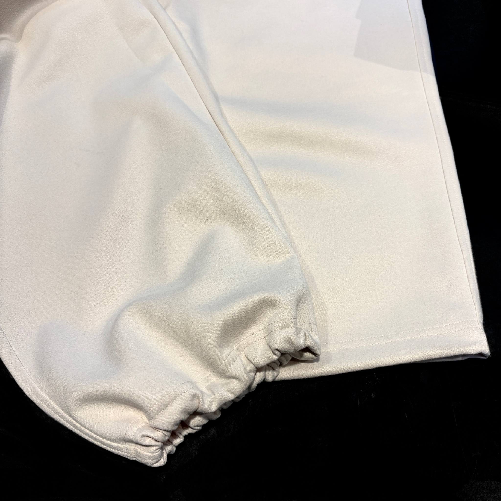
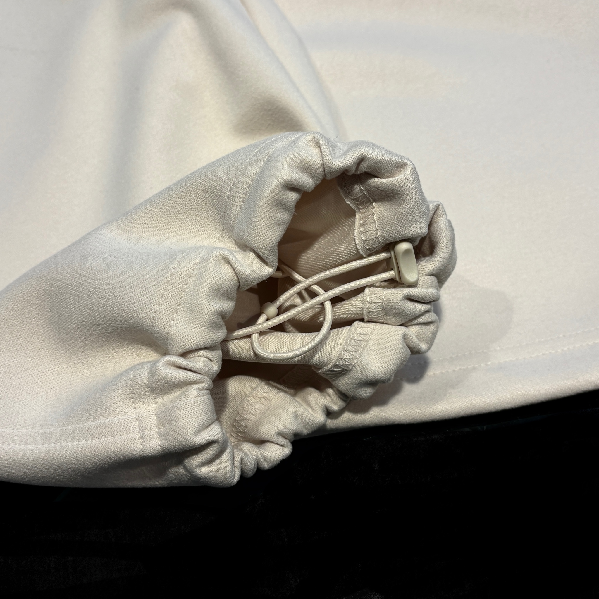

슬림 (SLIM)
허리부터 허벅지, 종아리까지 전체적으로 몸에 붙으면서 슬림하게 떨어지는 핏
다리가 가늘거나 체형을 드러내고 싶을 때 좋습니다.
깔끔하고 날렵한 인상을 줍니다.
추천 체형 : 마른 체형, 전체적으로 날씬한 체형
몸의 실루엣을 그대로 살려주어 왜소해 보이지 않고 깔끔하고 날렵한 이미지를 줍니다.

와이드 (WIDE)
허리부터 밑단까지 전체적으로 통이 넓고 넉넉한 핏
활동성이 좋고 편안하며, 트렌디하고 힙한 스타일 연출에 좋습니다.
다리가 휘거나 종아리가 굵은 체형 커버에 탁월합니다.
추천 체형 : 하체 전체가 발달한 체형, 다리 라인이 곧지 않은 체형
통이 넓어 다리 라인을 완전히 감춰주어 체형 보완 효과가 가장 뛰어납니다.
다리가 휘었거나 종아리가 굵은 경우 특히 추천합니다.

세미 와이드 (SEMI-WIDE)
스트레이트와 와이드의 중간 정도 실루엣
와이드 핏보다는 덜하지만, 일반적인 핏보다 전체적으로 여유가 있고 밑단 폭도 넓은 편입니다.
편안하면서도 트렌디한 느낌을 주며, 부담스럽지 않게 와이드 핏을 시도하고 싶을 때 좋습니다.
추천 체형 : 평균 체형, 트렌디함을 원하는 사람
와이드 핏이 부담스럽지만, 다리 라인을 가리고 싶을 때 좋습니다.
다리통의 여유로 체형 보완 효과가 있으며, 와이드 핏보다는 단정합니다.

테이퍼드 (TAPERED)
허벅지는 여유가 있으나, 무릎 아래부터 밑단으로 갈수록 점점 좁아지는 핏
발목 부분이 슬림해져 깔끔하고 댄디한 느낌을 줍니다.
허벅지가 두꺼운 체형을 보완하는 데 효과적입니다.
추천 체형 : 하체에 근육/살이 많은 체형 (특히 허벅지 발달형)
허벅지에 여유를 주어 편안하게 활동할 수 있습니다.
무릎 아래부터 좁아지는 디자인 덕분에 발목이 상대적으로 얇아 보여 전체적인 밸런스가 좋습니다.
조거 (JOGGER)
허리와 밑단에 밴딩 처리를 하거나 끈으로 조여서 발목을 잡아주는 형태의 바지
핏 자체는 테이퍼드나 슬림인 경우가 많습니다.
운동복에서 유래했으며, 캐주얼하고 스포티한 룩에 적합합니다.
발목이 드러나 경쾌해 보입니다.
추천 체형 : 활동적인 체형, 스포티한 룩을 선호하는 체형
스포티한 룩 연출에 최적화되어 있습니다.
종아리가 굵다면 밑단의 밴딩이 오히려 부각될 수 있어 주의가 필요합니다.
스트레이트 (STRAIGHT)
허벅지부터 밑단까지 거의 일직선으로 떨어지는 핏
레귤러(Regular) 핏이라고도 불립니다.
가장 기본적이고 클래식한 핏으로, 유행을 타지 않고 누구나 무난하게 잘 어울립니다.
포멀한 룩부터 캐주얼한 룩까지 다양하게 활용 가능합니다.
추천 체형 : 모든 체형 (특히 평균 체형)
허벅지부터 밑단까지 일자로 떨어져 체형의 단점을 크게 드러내지 않습니다.
가장 균형 잡힌 기본 핏으로 누구나 무난하게 잘 어울립니다.
배기 (BAGGY)
허리나 엉덩이, 허벅지 부분이 매우 넉넉하고 풍성하며, 밑단으로 갈수록 좁아지거나 루즈하게 떨어지는 핏
힙합이나 스트리트 패션에서 자주 보이는 핏으로, 활동적인 느낌과 개성을 강조합니다.
추천 체형 : 개성을 강조하고 싶은 체형, 마른 체형 (힙합/스트리트 스타일)
허리와 힙 부분이 매우 넉넉하여 마른 체형도 풍성한 볼륨감을 줄 수 있습니다.
다리 라인보다는 스타일과 무드를 강조하는 핏입니다.
2WAY
하나의 바지로 스트레이트 핏과 조거 핏 두 가지 스타일을 연출할 수 있는 디자인
보통 밑단에 스트링(조임 끈)이나 단추, 지퍼 등이 있습니다.
이를 활용하여 밑단을 조이면 조거 핏이 되고, 풀면 스트레이트 핏이 됩니다.
상황에 따라 포멀함과 캐주얼함을 오가며 스타일링 변화를 줄 수 있는 실용적입니다.
추천 체형 : 다양한 스타일을 시도하고 싶은 체형
스트레이트 핏과 조거 핏의 장점을 모두 누릴 수 있어 활용도와 실용성을 최우선으로 생각하는 분들에게 좋습니다.
 당신의 쇼핑을 더욱 편안하게
Comfort your shopping, Comfort your style